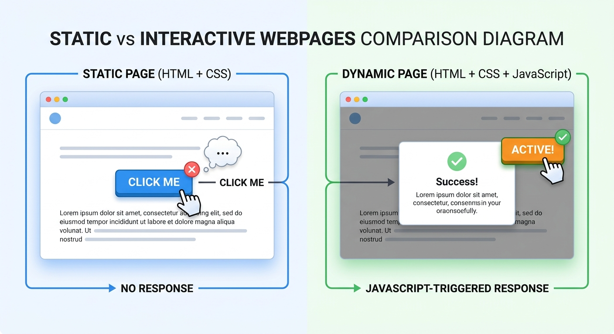
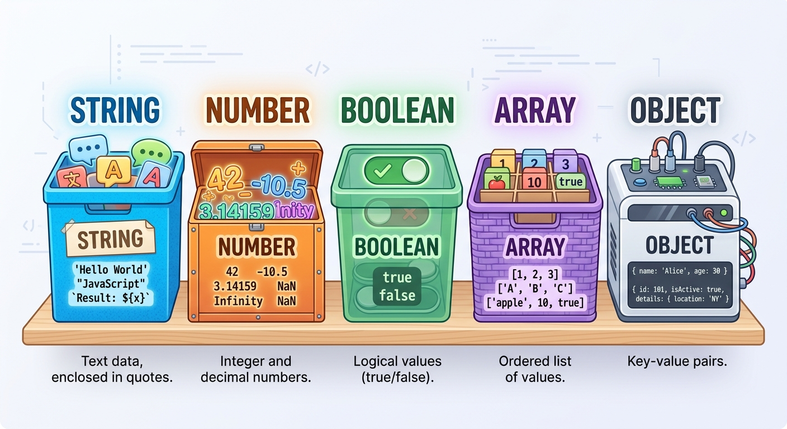
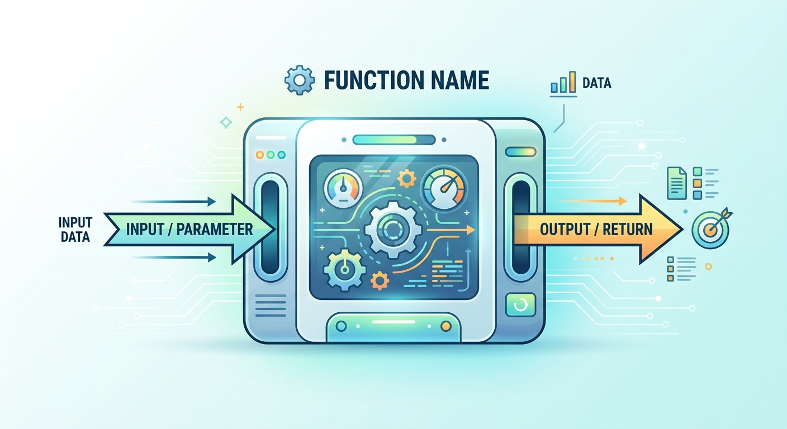
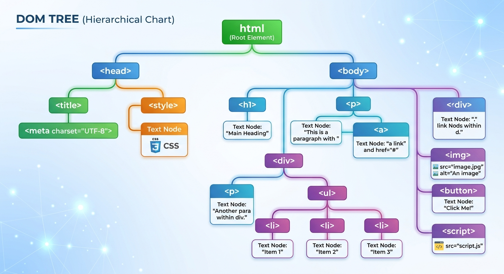

JavaScript
Menambahkan interaksi pada halaman web lewat variabel, fungsi, event, dan DOM.
Pengertian & Fungsi JavaScript
Teks Penjelasan
JavaScript adalah bahasa pemrograman yang berjalan di browser dan digunakan untuk membuat halaman web menjadi dinamis dan interaktif, sesuatu yang tidak dapat dilakukan oleh HTML maupun CSS saja.
Fungsi JavaScript dalam website antara lain merespons aksi pengguna seperti klik dan ketik, mengubah konten halaman tanpa memuat ulang, memvalidasi input form sebelum dikirim, membuat animasi dan interaksi dinamis, serta mengambil dan mengirim data dari dan ke server.
Gambar / Ilustrasi

Video
Contoh Kode
console.log('Halo dari JavaScript!');Hubungan HTML, CSS & JavaScript
Teks Penjelasan
JavaScript biasanya mengambil elemen HTML melalui DOM, lalu dapat membaca atau mengubah kontennya, serta dapat menambah dan menghapus class CSS pada elemen tersebut untuk mengubah tampilannya secara dinamis.
Video
Contoh Kode
const tombol = document.getElementById('tombolTema');
tombol.addEventListener('click', function () {
document.body.classList.toggle('tema-gelap');
});Variabel
Teks Penjelasan
Variabel adalah wadah untuk menyimpan data yang dapat digunakan dan diubah dalam program. JavaScript modern menggunakan kata kunci let untuk nilai yang dapat diubah, dan const untuk nilai tetap yang tidak dapat diubah setelah didefinisikan.
Video
Contoh Kode
let nama = 'Rifqi';
const mataKuliah = 'Pemrograman Web';
nama = 'Adika';Tipe Data
Teks Penjelasan
JavaScript memiliki beberapa tipe data dasar, yaitu String untuk teks dalam tanda kutip, Number untuk angka, Boolean untuk benar atau salah, Array untuk daftar nilai, dan Object untuk kumpulan data berpasangan kunci dan nilai.
Gambar / Ilustrasi

Video
Contoh Kode
let namaMateri = 'HTML';
let jumlahMateri = 3;
let sudahLulus = false;
let daftarMateri = ['HTML', 'CSS', 'JavaScript'];
let mahasiswa = { nama: 'Rifqi', semester: 5 };Operator
Teks Penjelasan
Operator digunakan untuk melakukan operasi pada nilai, seperti operator aritmatika untuk hitungan, operator perbandingan untuk membandingkan nilai, dan operator logika untuk menggabungkan beberapa kondisi.
Disarankan menggunakan tanda sama dengan tiga kali (strict equality) daripada dua kali, untuk menghindari perbandingan yang membingungkan akibat konversi tipe data otomatis oleh JavaScript.
Video
Contoh Kode
let a = 10;
let b = 3;
console.log(a + b);
console.log(a > b);
console.log(a === '10');Conditional (Percabangan)
Teks Penjelasan
Struktur if dan else digunakan agar program dapat mengambil keputusan berbeda tergantung suatu kondisi. Program memeriksa kondisi dari atas ke bawah, dan menjalankan blok pertama yang kondisinya terpenuhi.
Video
Contoh Kode
let nilai = 75;
if (nilai >= 85) {
console.log('Sangat Baik');
} else if (nilai >= 70) {
console.log('Baik');
} else {
console.log('Perlu Belajar Lagi');
}Function (Pembahasan Mendalam)
Teks Penjelasan
Function adalah blok kode yang diberi nama dan dapat dijalankan berulang kali kapan pun dibutuhkan, cukup dengan memanggil namanya. Function dapat menerima input yang disebut parameter, dan dapat mengembalikan hasil memakai kata kunci return.
Kesalahan umum pemula adalah lupa menuliskan return sehingga fungsi tidak menghasilkan nilai apa pun, atau lupa memanggil fungsi dengan tanda kurung sehingga fungsi tidak benar benar dijalankan.
Gambar / Ilustrasi

Video
Contoh Kode
function sapa(nama) {
return 'Halo, ' + nama + '! Selamat belajar JavaScript.';
}
console.log(sapa('Rifqi'));
console.log(sapa('Adika'));Event
Teks Penjelasan
Event adalah kejadian yang terjadi pada halaman web, seperti klik tombol, mengetik pada input, atau menggulir halaman. JavaScript dapat mendengarkan event tertentu menggunakan addEventListener dan menjalankan function saat event tersebut terjadi.
Video
Contoh Kode
const tombol = document.getElementById('tombolKirim');
tombol.addEventListener('click', function () {
console.log('Tombol diklik!');
});DOM (Pembahasan Mendalam)
Teks Penjelasan
DOM (Document Object Model) adalah representasi struktur HTML dalam bentuk objek yang dapat diakses dan diubah oleh JavaScript. Setiap tag HTML pada halaman menjadi sebuah node yang dapat dicari, dibaca, dan diubah melalui kode JavaScript.
Elemen dapat dipilih memakai document.getElementById atau document.querySelector, isinya dapat dibaca dan diubah lewat textContent, gayanya dapat diubah lewat style, dan class-nya dapat ditambah, dihapus, atau dialihkan lewat classList.
Gambar / Ilustrasi

Video
Contoh Kode
const judul = document.getElementById('judul');
judul.textContent = 'Judul Baru!';
judul.style.color = 'crimson';
judul.classList.toggle('tersorot');Manipulasi Elemen HTML
Teks Penjelasan
Menggabungkan konsep DOM dan event membuat halaman benar benar interaktif, misalnya menampilkan pesan yang semula tersembunyi setelah sebuah tombol diklik, dengan mengubah property style.display pada elemen terkait.
Video
Contoh Kode
const tombolSimpan = document.getElementById('btnSimpan');
const pesan = document.getElementById('pesan');
tombolSimpan.addEventListener('click', function () {
pesan.style.display = 'block';
});Coba Kodenya! — Demo JavaScript
Tekan tombol-tombol di bawah untuk melihat cara JavaScript mengubah elemen di halaman ini secara langsung.
Latihan Singkat JavaScript
Yuk coba 5 soal singkat! Pilih jawabanmu, langsung muncul feedback-nya.